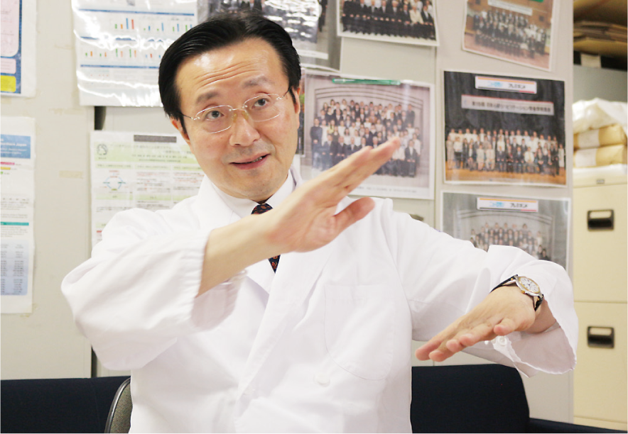
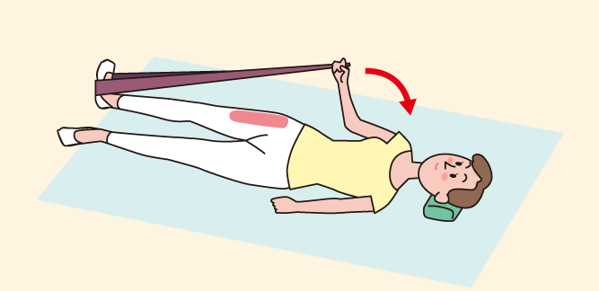
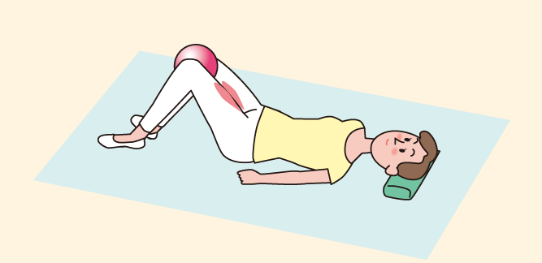

DM Trend Journal 39号
CLINICAL TALK

東北大学大学院
医学系研究科
内部障害学分野教授
日本腎臓リハビリテーション学会 理事長
上月 正博先生
東北大学大学院医学系研究科
内部障害学分野教授
日本腎臓リハビリテーション学会 理事長
上月 正博先生
CKDの患者さんでは、運動が蛋白尿や糸球体濾過量(GFR)の低下など腎機能に悪影響を及ぼすことがあるので、従来、運動は推奨されることはありませんでした。特に、進行したCKDの患者さんの場合は、安静が治療の一つであると長い間考えられてきました。ところが最近になって、運動による蛋白尿の増加は一過性で長期的には増加しないことや、GFRも一時的に低下するものの、長期的な影響はないということが分かってきて、CKD治療の考え方が運動抑制から運動推奨にシフトしてきています。
また、CKD患者さんに運動療法を行うことで推定GFR(eGFR)が改善するというGreenwoodらの報告1)や、CKDステージ3以降の患者さんに運動療法を行うと、総死亡率が低下し、さらに透析や腎移植などの腎代替療法への移行を抑制するというChenらの報告2)などで運動療法は有用であると報告されたことがこれらの背景にあります。その結果、運動療法を中核とした腎臓リハビリテーション(Renal rehabilitation以下、腎臓リハ)が普及し始
めました。腎臓リハは、腎疾患や透析医療による身体的・精神的影響の軽減や症状の調整をし、生命予後や心理社会的・職業的な状況を改善することを目的としています。そのために薬物療法、運動療法、食事療法などに加えて、水分管理、教育、精神・心理的サポートなどの看護やケア等を、長期にわたり行う包括的プログラムです。
これからは、透析やCKDになっても、運動制限し安静にするという従来の治療に代わって、腎臓リハを行うことによって、透析を遅らせたり、健康寿命を伸ばすことができる時代になってきたと言えます(図1)。
保存期CKD患者→腎機能を悪化させないために安静が治療の一つ CKD透析患者 →透析前後は疲労が出やすく、安静にしがち
●医療・透析技術の進歩、超高齢社会の到来(患者の超高齢化) ●運動療法のエビデンス蓄積
保存期 →●運動療法では腎機能は悪化しない、
CKD患者 むしろ改善する
●透析移行を防止するための治療法の一つとして運動療法が必要
●運動療法は心血管疾患の予防に有効
●サルコペニア・フレイル・Protein-Energy Wasting(PEW)予防に有効
CKD →●運動療法では透析効率が改善する
透析患者 ●ADLの改善、降圧薬・心不全治療費の減少のための治療法の一つとして運動療法が必要
●運動療法は心血管疾患の予防に有効
●サルコペニア・フレイル・Protein-Energy Wasting(PEW)予防に有効
上月正博先生ご提供
• 循器系
―エリスロポイエチンの合成能の低下
• 腎性貧血
―死因の第1位は心不全
―糖尿病性腎症、高血圧といった生活習慣病を基礎疾患に有する患者の比率が増加
―高齢化
• 代謝・免疫系
―インスリン感受性の低下
―栄養分の透析液へ流出
―炎症・線維化・動脈硬化に関係するサイトカインの増加
• 筋・骨格系
―筋蛋白の異化亢進
―筋力低下(廃用性筋力低下、尿毒症性ミオパチー、尿毒症性ニューロパチー)
•骨・関節系
―腎性骨異栄養症(線維性骨炎、骨軟化症、無形成骨症)
―透析アミロイドーシス
• 心理・精神系
―心理的ストレス、生活の質(QOL)の低下
• 運動耐容能の低下
上月正博先生ご提供
わが国のCKDの患者数は、1,330万人に達しています3)。透析患者数については32万人余(2015年末日本透析医学会統計調査)と、前年に比して約4,500人の増加をみせています。このうち原因疾患として最も多いのが糖尿病性腎症で、新規透析導入患者数の約40%を占める12万人となっています(図2)4)。透析導入時の平均年齢は、約67歳と年々高齢化してきています。
また、透析機器の技術と診断・治療に関するわが国の環境は世界でも高い水準にあります。それは、透析開始から1年の生存率が、2015年で約90%となっていることからも明らかです4)。従って、腎臓リハの普及はこれらの数値をさらに改善することにつながるものと考えられます。
透析療法を受けている患者さんにおいては、多くの問題点を抱えています(表1)。これに対して腎臓リハの中核的役割を担う運動療法は、運動耐容能の改善のみならず、透析効率のアップやADLの改善が期待され、心血管疾患の予防に効果があるとされるようになってきています(表2)5)。また、CKD患者さんにおいても、この運動療法によって体力・筋力の低下を抑制することで、サルコペニア・フレイルの予防、MIA(低栄養・炎症・動脈硬化等)の改善、心血管疾患の予防につながります。

日本透析医学会統計調査委員会「図説わが国の慢性透析療法の現況(2015年)」より作図
❶最大酸素摂取量の増加 ❷左心室収縮能の亢進(安静時・運動時) ❸心臓副交感神経系の活性化 ❹心臓交感神経過緊張の改善 ❺低栄養・炎症・複合症候群の改善 ❻貧血の改善 ❼睡眠の質の改善 ❽不安・うつ・QOLの改善 ❾ADLの改善 ❿前腕静脈サイズの増加(とくに等張性運動による) ⓫透析効率の改善 ⓬死亡率の低下
上月正博 臨床栄養 118: 334-335, 2011

糖尿病性腎症から透析に至る患者数の増加を踏まえて、平成24年度の診療報酬改定では、“糖尿病性腎症”等の患者さんに対し、糖尿病透析予防のための指導を行った場合に算定できる「糖尿病透析予防指導管理料(月1回350点)」が認定されました。
次いで平成28年度の改定では、腎不全期の糖尿病性腎症の患者さんに運動指導を行い、一定水準以上の成果を出している保険医療機関に対して、「腎不全期患者指導加算(月1回100点)」が限定的に認められ新設に至りました。
これは、4年間、日本腎臓リハビリテーション学会が中心となって日本腎臓学会、日本透析医学会、日本心臓リハビリテーション学会、日本リハビリテーション医学会が協力して運動療法の有用性を国に働きかけた結果獲得することのできた成果であり、腎臓リハの効果が評価された結果であると言えます。今後は、患者さんのQOLや予後を最大限にできる腎臓リハ提供のため、さらに透析やCKD患者さんにおける運動療法の普及のため、そして何よりも重要なエビデンスの構築のために、CDEをはじめとしたメディカルスタッフの積極的なかかわりによる、運動療法のアウトカム評価のさらなる協力が求められています。
腎臓リハの中核を成す運動療法は、①有酸素運動、②レジスタンス運動、③バランス運動、④柔軟性の4つの運動を組み合わせたものです。
特に有酸素運動とレジスタンス運動が中心になります。ウォーキングやサイクリング、水泳など身体に負荷をかける運動が有酸素運動ですが、強度より継続することの方が重要です。
息切れせず、おしゃべりができる程度のウォーキングでよく、心拍数でいえば安静時プラス30未満の楽々運動がむしろおすすめなのです。
レジスタンス運動とは、一般的には筋力トレーニングのことです。たとえば、私たちの総体重に対する体の各部位の重さの比率は、大腿からの下肢両足では、体重の約20%近くになります。たとえば体重が50kgの人なら両足では約10kg弱になるようです。そのため、仰臥状態で、ゆっくり片足を上げ下げするような動作だけでもかなりの負荷がかかる運動になることを知っておくとよいでしょう。
簡単なエクササイズとしては、マットの上に横になりお尻を上下させたり、ボールを両足で挟んだり、足でボールを転がすことも立派な運動です。ゴムバンドやタオルなどを片足に掛け、それを持ったままの肘の曲げ伸ばしもおすすめです(図3)。
運動は、一人では継続することが難しい場合もあるので、仲間と一緒に行うステップエクササイズや、ゴムボールを使った運動などレジスタンス運動も工夫次第で、楽しみながら続けられます(図4)。
また、透析中、ベッドに仰向けになった状態でも運動療法に使用できるエルゴメーターも開発されています。椅子に腰掛けながらでも、足だけで自転車こぎ運動ができ、揺れが少なく長時間使用可能です。(図5)。
図3:簡単なエクササイズ( の部分は負荷のかかる部位です)
◆お尻の上げ下げ

❶仰向けに寝て、膝をたてる ❷肩や腕は床につけたまま、肩から背中、膝までが一直線になるようにお尻をゆっくり浮かせる ❸肩ゆっくりお尻を下ろす
◆肘の曲げ伸ばし
❶仰向けに寝て、足も伸ばす ❷片方の足の裏にゴムバンドを掛けて、ゴムバンド掛けた側の手でゴムバンドの先をしっかり持つ ❸肩は床から浮かさないようにし、肘の曲げ伸ばしをする ❹反対側の足も同様に行う
◆ボール挟み
❶仰向けに寝て、両膝をたてる ❷膝のところにボールを挟む ❸大腿部( 部)の内側で左右均等に力をこめて、ボールを押す
◆ボール転がし

❶仰向けに寝て、ボールの上に両足を乗せる
(腰が浮かない程度の高さのボールを使う)
❷膝を立てて、ボールを足で転がす
上月正博先生ご提供

上月正博先生ご提供
上月正博先生ご提供
腎臓リハの中核を成す運動療法は、①有酸素運動、②レジスタンス運動、③バランス運動、④柔軟性の4つの運動を組み合わせたものです。
特に有酸素運動とレジスタンス運動が中心になります。ウォーキングやサイクリング、水泳など身体に負荷をかける運動が有酸素運動ですが、強度より継続することの方が重要です。
息切れせず、おしゃべりができる程度のウォーキングでよく、心拍数でいえば安静時プラス30未満の楽々運動がむしろおすすめなのです。
レジスタンス運動とは、一般的には筋力トレーニングのことです。たとえば、私たちの総体重に対する体の各部位の重さの比率は、大腿からの下肢両足では、体重の約20%近くになります。たとえば体重が50kgの人なら両足では約10kg弱になるようです。そのため、仰臥状態で、ゆっくり片足を上げ下げするような動作だけでもかなりの負荷がかかる運動になることを知っておくとよいでしょう。
簡単なエクササイズとしては、マットの上に横になりお尻を上下させたり、ボールを両足で挟んだり、足でボールを転がすことも立派な運動です。ゴムバンドやタオルなどを片足に掛け、それを持ったままの肘の曲げ伸ばしもおすすめです(図3)。
運動は、一人では継続することが難しい場合もあるので、仲間と一緒に行うステップエクササイズや、ゴムボールを使った運動などレジスタンス運動も工夫次第で、楽しみながら続けられます(図4)。
また、透析中、ベッドに仰向けになった状態でも運動療法に使用できるエルゴメーターも開発されています。椅子に腰掛けながらでも、足だけで自転車こぎ運動ができ、揺れが少なく長時間使用可能です。(図5)。
これまでの医療とリハビリ
●医療 → 寿命の延長
●リハビリ → 生活の質の改善
⬇
これからの心臓・腎臓・呼吸リハビリなどの内部障害リハビリ
→寿命の延長と生活の質の改善
(Adding Life to Years and Years to Life)
Kohzuki M. : Circ J 80:1697-1699, 2016より作図
• 医師、理学療法士、看護師の指示を守る • ウォーミングアップ、クーリングダウン(ストレッチなど)を行う • 体調不良や睡眠不足の場合は無理に行わない • 起床直後は避け、食後1〜2時間空ける • 運動の前、中、後に水分をとる • 息切れ、胸痛、めまいなどがあればすぐに中止する
上月正博先生ご提供
表4:患者さんに運動療法を長続きしてもらうためのコツなど
◆日常生活に取り入れ可能な運動
・遠回りをして歩く
・エレベーターやエスカレーターをなるべく使わずに歩く
・仕事中はなるべく階段を使う
・昼食を外食とする場合は、遠くの店に歩いていく
・バス停や駅は1つ手前で下車、1停留所分や1駅分歩く
・休日の買い物は、目的の品だけでなく、ウインドー・ショッピングも楽しむ
◆運動を長続きさせるコツ
・歩数計をつけて毎日の記録を残す
・景色のよいところを散歩する
・好きな音楽を聴きながら散歩する
・運動仲間をつくる
・服装などファッションをいつもよりカラフルにし、運動が楽しくなるようにする
・栄養や睡眠を十分とる
・家族に応援してもらったり、日にちを決めて教室やジムに通うなど、“他人の目の監視下にある運動”から始める
・とりあえず始めてみる、挫折してもひと休みしてまた再開する、その積み重ねで運動習慣がついていく
◆運動を行う注意点
・他人と話をしながら続けられる運動を選び、運動中や運動終了後に、苦しさや痛みを覚えないようにする
・最初から頑張りすぎず、自分の体調に合わせ、マイペースで運動する
・何が何でも毎日とは考えず、週休2日程度の休みをとる
・体調の悪いときは休む
・頭痛・胸痛・冷や汗・脱力感などがあれば、ただちに運動をやめ、主治医に相談する
・運動中や運動後には、水分補給を忘れずに行う
・必ずウォーミングアップをしてから行う
上月正博先生ご提供
CDEのためのディスカッション・ポイント
❶CDEは、CKD患者さんや透析患者さんへ向けての、腎臓リハビリテーションの目的、概念や、中核を成す運動療法の重要性について理解しているだろうか。
❷CDEは、運動療法の実際について、その適応、禁忌、中止基準等も理解し、指導できるだろうか。
❸CDEは、糖尿病透析予防指導管理料、腎不全患者指導加算などの診療報酬の算定要件について理解しているだろうか。
DM Trend Journal 39号
糖尿病療養指導と腎臓リハビリテーション腎臓リハビリテーションって知ってますか
Q&A あなたならどうする？CKDを放置しているとやがて透析へと進行していきますが、患者さんが腎機能低下のリスクの意識を高め、予防に関して適切な行動がとれるように、CDEはどのような援助をしたらいいのか具体的に教えてください。
チーム力あり！ リーディングホスピタル多職種のCDEによるきめ細かな療養指導で CKD、透析予防に取り組む
CDE Trendview免疫チェックポイント阻害薬投与にあたっての注意喚起について
CDE room冨永幸恵さん(2004年CDE資格取得) 阿部幸子さん(2001年CDE資格取得)
CDEのための学会レポート「第20回 日本病態栄養学会学術集会」レポート
Backnumber
第39号

第37号

第36号

第33号

第32号

第31号